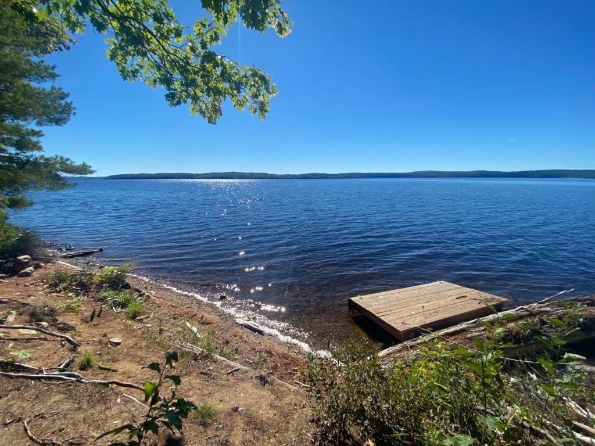
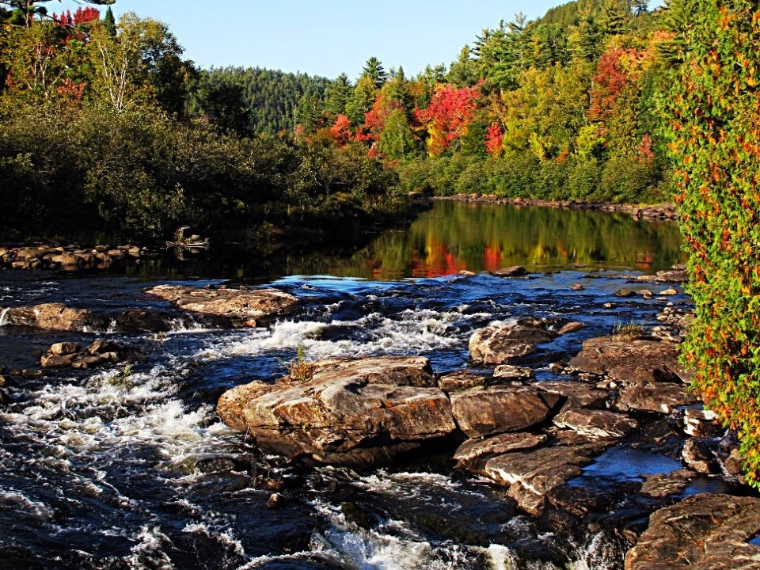
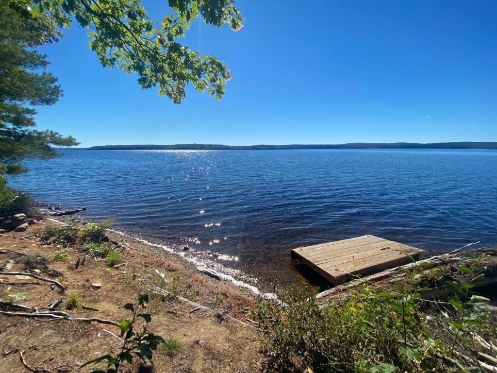
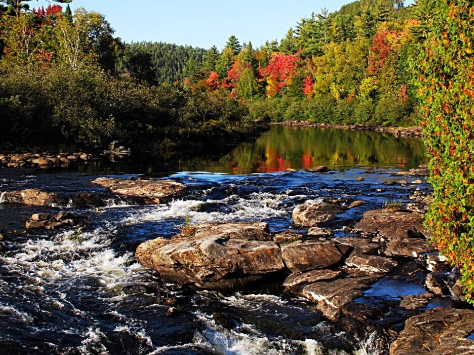

Meet the partners
Friends of the Dumoine River
Since we started the reopening of the Dumoine Tote Road Trail in 2019, it has been a labour of love by many volunteers proud to call themselves Friends of Rivière du Moine.
ZEC Dumoine
The ZEC Dumoine is proud to be part of the Dumoine Tote Road Trail initiative and hopes to share the magnificent territory with all nature enthusiasts.
Wolf Lake First Nation
The Dumoine Watershed is within the traditional unceded territory of the Wolf Lake First Nation. Today some of the decedents of the Dumoine Band whose families ancestral hunting and trapping territories encompassed the Dumoine Tote Road Trail, reside with the Wolf Lake First Nation.
CPAWS-OV
The Ottawa Valley Chapter of the Canadian Parks and Wilderness Society (CPAWS-OV) is proud to support the development and ongoing maintenance of the Dumoine Tote Road Trail.